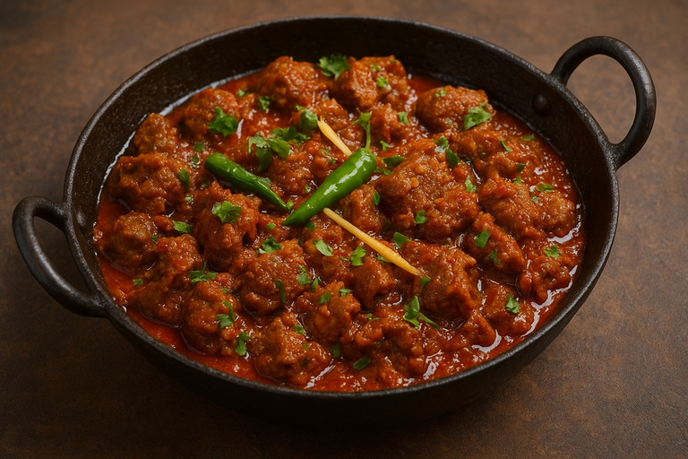

Mutton Karahi

Description
Mutton Karahi is easily one of the most fulfilling dishes you can make for lunch or dinner. There's one caveat - you'll need to set aside a couple of hours to prepare it well. But it's very beginner friendly, and easy to get right.
Ingredients
- Mutton - 1 KG
- Tomatoes - 750g
- Green Chillies - x2
- Cumin Powder - 1/2 tbsp
- Corriander Powder - 1 tbsp
- Tumeric Powder - 1 tsp
- Black Pepper Powder - 1 tsp
- Salt - 1 tsp
- Oil - 3/4 Cup
- Butter - 2 tbsp
Steps
- Marinate mutton with salt, black pepper powder, tumeric powder, corriander powder, and cumin powder. Add 1/4 cup oil and mix thoroughly.
- Pour 1/2 cup oil in a large pot and set it on medium heat.
- Once oil is hot, add marinated mutton and fry until browned.
- Slice tomatoes in half. Put it on top of your mutton and close the lid your pot. Let it steam for 10-15 mins on medium heat.
- Take the lid off. Using a tong, remove the skins from the tomatoes.
- Slowly mash the tomotoes, and mix in with contents of your pot thoroughly.
- Add in 1.25 litres water, and let it cook for 2 hrs. Also add green chillies.
- Keep checking every 15-20 mins, and stir for a minute after each check. Add water if necessary.
- At the end of two hours, check if meat is tender. If not, add an additional2 cups water and let it cook another 30 mins.
- Put flame on high, and mix until you get a smooth gravy. Add butter at this point.
- Dish out in a bowl, and serve with hot naan.